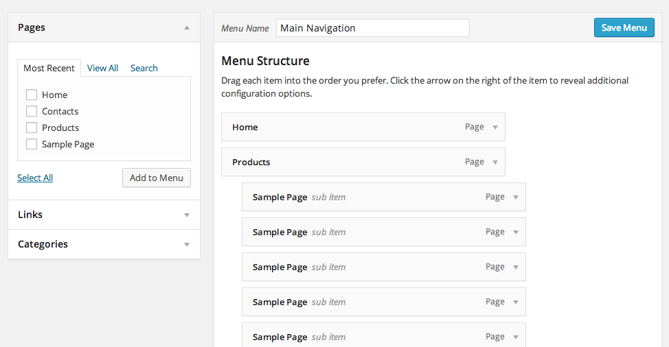
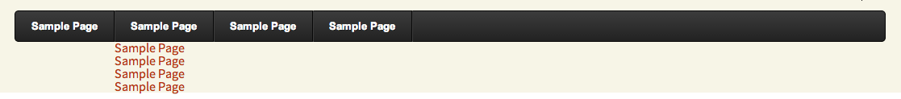

In this tutorial I am going to show you how to build a pure CSS drop down menu in Wordpress. I will walk you through the steps of creating a menu in Wordpress, customizing it with CSS, and then printing the menu in your theme file. This tutorial requires that you have access to edit your Wordpress theme files and also a basic understanding of HTML and CSS. I will walk through the process step-by-step so don't worry if you have never edited a wordpress theme file before.
Note: I will be using Wordpress 3.9 and the Twenty Thirteen theme for this tutorial, but all the steps should be the same for any Wordpress 3 website.
Here is what our menu is going to look like when we are finished:
Chances are you already have a menu built in the Wordpress. Wordpress 3 has an easy to use, drag-n-drop interface for you to create a menu structure. If you haven't already, go to Appearance > Menus to build and save a custom menu. Make sure to give your menu a name and remember it for later.
Before we can print our menu in a Wordpress theme file, we need to add a Wordpress Walker Class to our functions.php file. This piece of code will clean up the HTML output of our menu so that we can more easily create the CSS styles. Simply copy and paste the Walker code into your functions.php file which should be right inside your theme folder. If a functions.php file does not exist, create it and then paste the Walker Class code in.
class CSS_Menu_Walker extends Walker {
var $db_fields = array( 'parent' => 'menu_item_parent', 'id' => 'db_id' );
function start_lvl( &$output, $depth = 0, $args = array() ) {
$indent = str_repeat("\t", $depth);
$output .= "\n$indent<ul>\n";
}
function end_lvl( &$output, $depth = 0, $args = array() ) {
$indent = str_repeat("\t", $depth);
$output .= "$indent</ul>\n";
}
function start_el( &$output, $item, $depth = 0, $args = array(), $id = 0 ) {
global $wp_query;
$indent = ( $depth ) ? str_repeat( "\t", $depth ) : '';
$class_names = $value = '';
$classes = empty( $item->classes ) ? array() : (array) $item->classes;
/* Add active class */
if(in_array('current-menu-item', $classes)) {
$classes[] = 'active';
unset($classes['current-menu-item']);
}
/* Check for children */
$children = get_posts(array('post_type' => 'nav_menu_item', 'nopaging' => true, 'numberposts' => 1, 'meta_key' =>'_menu_item_menu_item_parent', 'meta_value' => $item->ID));
if (!empty($children)) {
$classes[] = 'has-sub';
}
$class_names = join( ' ', apply_filters( 'nav_menu_css_class', array_filter( $classes ), $item, $args ) );
$class_names = $class_names ? ' class="' . esc_attr( $class_names ) . '"' : '';
$id = apply_filters( 'nav_menu_item_id', 'menu-item-'. $item->ID, $item, $args );
$id = $id ? ' id="' . esc_attr( $id ) . '"' : '';
$output .= $indent . '<li' . $id . $value . $class_names .'>';
$attributes = ! empty( $item->attr_title ) ? ' title="' . esc_attr( $item->attr_title ) .'"' : '';
$attributes .= ! empty( $item->target ) ? ' target="' . esc_attr( $item->target ) .'"' : '';
$attributes .= ! empty( $item->xfn ) ? ' rel="' . esc_attr( $item->xfn ) .'"' : '';
$attributes .= ! empty( $item->url ) ? ' href="' . esc_attr( $item->url ) .'"' : '';
$item_output = $args->before;
$item_output .= '<a'. $attributes .'><span>';
$item_output .= $args->link_before . apply_filters( 'the_title', $item->title, $item->ID ) . $args->link_after;
$item_output .= '</span></a>';
$item_output .= $args->after;
$output .= apply_filters( 'walker_nav_menu_start_el', $item_output, $item, $depth, $args );
}
function end_el( &$output, $item, $depth = 0, $args = array() ) {
$output .= "</li>\n";
}
}
We now have a menu built and our Walker Class is in place. It's now time to print our menu inside a theme file. To do this we will be using the wp_nav_menu() function. Using PHP we will call this function and pass it the parameters of our menu so that it can print out the HTML structure. The 'menu' parameter is the name of the menu you created back in step 1. The 'container_id' will add a CSS ID to the menu HTML which we will use in our CSS styles later. The 'Walker' parameter is telling the wp_nav_menu() function to use our custom Wordpress walker class to print the HTML.
<?php
wp_nav_menu(array(
'menu' => 'Main Menu',
'container_id' => 'cssmenu',
'walker' => new CSS_Menu_Walker()
));
?>
Place this PHP code in one of your theme files. Where ever you place it is where your menu will be printed out. I am using the default Wordpress Twenty Thirteen theme so there is a theme file called header.php which is where I will place the code.
If you have done everything correctly up to this point you should see an unstyled HTML list being displayed in your theme. If you are not seeing your menu printed out, double check the previous steps.
Now it's time to add the styles to our menu and see the fruits of our labor. Go ahead and open up the CSS file for your theme. It might be in a folder called css/styles.css or just a file in the root directory of the theme. You can copy and paste all the CSS below into your theme's CSS file at once if you want. I will be breaking the CSS up into parts in order to explain it more easily.
Notice we are using the same ID that we specified in the wp_nav_menu() function, #cssmenu.
This first bit of CSS is just some simple resets to make sure that each browsers is starting from the same point.
#cssmenu,
#cssmenu ul,
#cssmenu li,
#cssmenu a {
border: none;
margin: 0;
padding: 0;
line-height: 1;
-webkit-box-sizing: content-box;
-moz-box-sizing: content-box;
box-sizing: content-box;
}
This next bit of CSS will be styling the first level of our drop down menu. One thing to note about this code is the CSS3 gradients that we are using for the background. If the user's browser doesn't support gradients, then we just fill in the background with the color #3c3c3c
Another style worth noting is the use of the :after pseudo class. This lets us add the faint border colors around each menu item which give the design some depth.
#cssmenu {
height: 37px;
display: block;
padding: 0;
margin: 0;
border: 1px solid;
border-radius: 5px;
width: auto;
border-color: #080808;
}
#cssmenu,
#cssmenu > ul > li > ul > li a:hover {
background: #3c3c3c;
background: -moz-linear-gradient(top, #3c3c3c 0%, #222222 100%);
background: -webkit-gradient(linear, left top, left bottom, color-stop(0%, #3c3c3c), color-stop(100%, #222222));
background: -webkit-linear-gradient(top, #3c3c3c 0%, #222222 100%);
background: -o-linear-gradient(top, #3c3c3c 0%, #222222 100%);
background: -ms-linear-gradient(top, #3c3c3c 0%, #222222 100%);
background: linear-gradient(top, #3c3c3c 0%, #222222 100%);
}
#cssmenu > ul {
list-style: inside none;
padding: 0;
margin: 0;
}
#cssmenu > ul > li {
list-style: inside none;
padding: 0;
margin: 0;
float: left;
display: block;
position: relative;
}
#cssmenu > ul > li > a {
outline: none;
display: block;
position: relative;
padding: 12px 20px;
text-align: center;
text-decoration: none;
text-shadow: 1px 1px 0 rgba(0, 0, 0, 0.4);
font-weight: bold;
font-size: 13px;
font-family: Arial, Helvetica, sans-serif;
border-right: 1px solid #080808;
color: #ffffff;
}
#cssmenu > ul > li > a:hover {
background: #080808;
color: #ffffff;
}
#cssmenu > ul > li:first-child > a {
border-radius: 5px 0 0 5px;
}
#cssmenu > ul > li > a:after {
content: '';
position: absolute;
border-right: 1px solid;
top: -1px;
bottom: -1px;
right: -2px;
z-index: 99;
border-color: #3c3c3c;
}
At this point your menu should look something like the image below. If it doesn't, circle back and double check all the CSS is correct.
Next we need to style the sub menus. We will want them to be hidden by default and then shown when the user hovers over the parent item. This can be accomplished using pure CSS.
First we will want to set all the sub menu UL to display: none;. Then we will use the :hover pseudo class on the sub menu to display: block;. This has the effect of hiding and showing the sub menu when the user hovers over a parent item.
#cssmenu ul li.has-sub:hover > a:after {
top: 0;
bottom: 0;
}
#cssmenu > ul > li.has-sub > a:before {
content: '';
position: absolute;
top: 18px;
right: 6px;
border: 5px solid transparent;
border-top: 5px solid #ffffff;
}
#cssmenu > ul > li.has-sub:hover > a:before {
top: 19px;
}
#cssmenu ul li.has-sub:hover > a {
background: #3f3f3f;
border-color: #3f3f3f;
padding-bottom: 13px;
padding-top: 13px;
top: -1px;
z-index: 999;
}
#cssmenu ul li.has-sub:hover > ul,
#cssmenu ul li.has-sub:hover > div {
display: block;
}
#cssmenu ul li.has-sub > a:hover {
background: #3f3f3f;
border-color: #3f3f3f;
}
#cssmenu ul li > ul,
#cssmenu ul li > div {
display: none;
width: auto;
position: absolute;
top: 38px;
padding: 10px 0;
background: #3f3f3f;
border-radius: 0 0 5px 5px;
z-index: 999;
}
#cssmenu ul li > ul {
width: 200px;
}
#cssmenu ul li > ul li {
display: block;
list-style: inside none;
padding: 0;
margin: 0;
position: relative;
}
#cssmenu ul li > ul li a {
outline: none;
display: block;
position: relative;
margin: 0;
padding: 8px 20px;
font: 10pt Arial, Helvetica, sans-serif;
color: #ffffff;
text-decoration: none;
text-shadow: 1px 1px 0 rgba(0, 0, 0, 0.5);
}
#cssmenu ul ul a:hover {
color: #ffffff;
}
#cssmenu > ul > li.has-sub > a:hover:before {
border-top: 5px solid #ffffff;
}
That's it! If you did everything correctly you should have brand new Wordpress drop down menu. If things don't seem right check out the troubleshooting below.
If your menu doesn't seem to be function correctly, or it looks a little off then it is possible you are experiencing residual styling from your Wordpress theme. This means that there are other CSS styles in your theme that are conflicting with our menu styles. The only way to fix this problem is to track down the other CSS styles and remove them. Your best bet is to use the Firebug extension for Firefox and inspect the CSS styles manually. Once you find the conflicting styles remove or delete them.